Note: As cybersecurity students, part of the responsibility is to ensure that the developed system supports compliance with existing data privacy and security laws. The system must include appropriate privacy notices, consent mechanisms, data protection controls, and compliance-related features to protect both the organization and its users. Each item below shows how LenLearn safeguards personal information, reduces legal and security risks, and promotes responsible data handling — with verifiable manuscript, appendix, and system evidence.
Panel note: Terms & Conditions Sec. 4 (Privacy Policy) is brief and does not enumerate every NPC data-subject right by name. Technical controls (RBAC, encryption, consent timestamps, archive vault) and Ch.6.4 RA 10173 recommendations support compliance; consider expanding the in-app privacy notice before production rollout.
| Specific Modules / Tasks | Status | Percentage | Evidence / Proof | Remarks |
|---|---|---|---|---|
| C.5 Data Privacy Clause and Compliance | Completed | 100% |
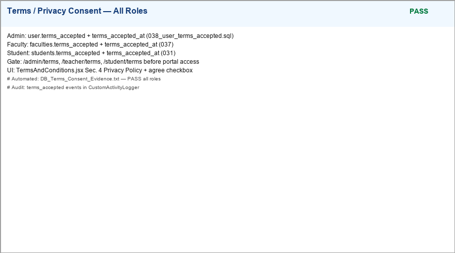 System scan — terms/privacy consent across Admin, Faculty, Student
|
All seven privacy compliance rows verified below. |
| System includes Data Privacy Agreement | Completed | 100% |
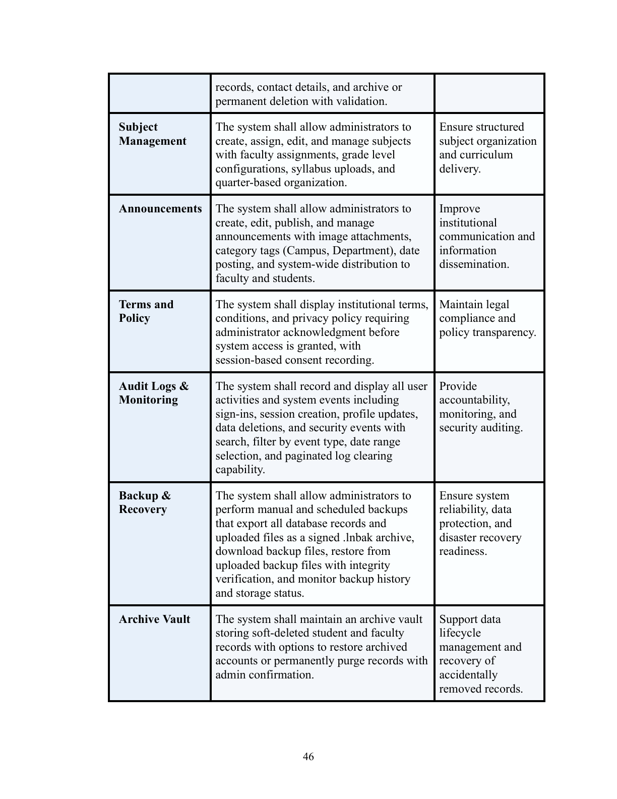 PDF p. 46 — Table 1: Admin Terms and Policy row
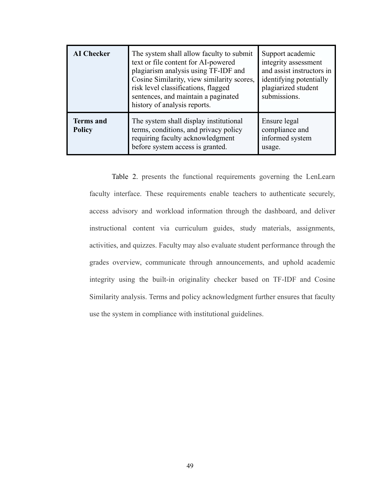 PDF p. 49 — Table 2: Faculty Terms and Policy row
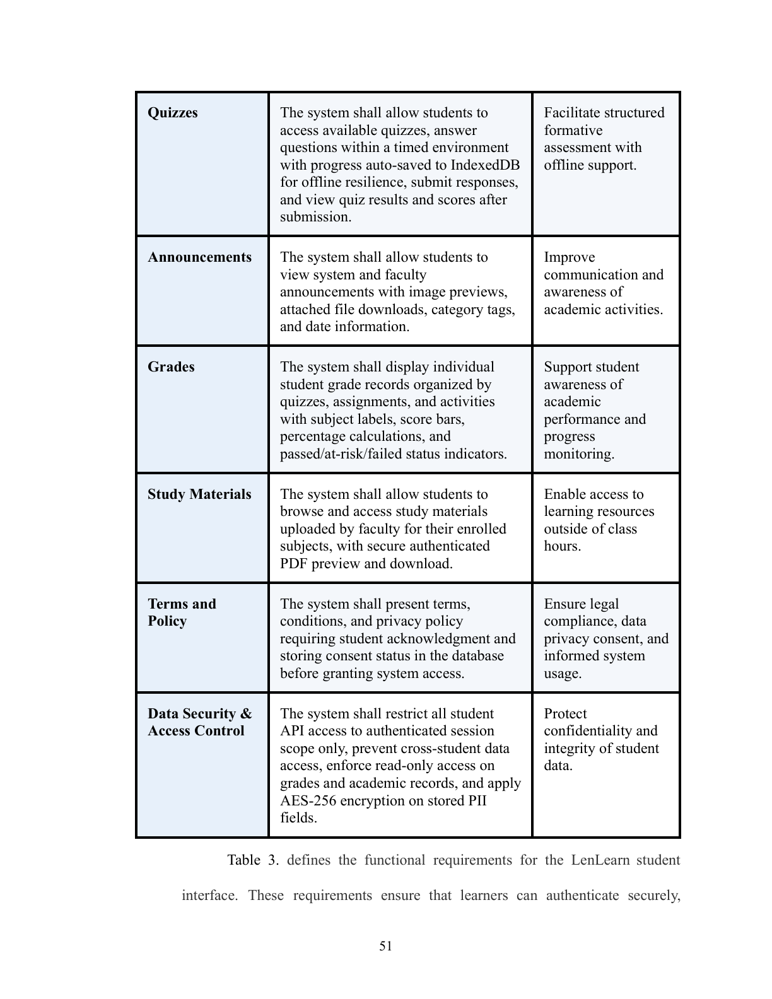 PDF p. 51 — Table 3: Student Terms and Policy row
|
FRS Tables 1–3 require institutional terms, conditions, and privacy policy with role-specific acknowledgment. Implemented via TermsAndConditions.jsx (Sec. 4 Privacy Policy) on /admin/terms, /teacher/terms, and /student/terms. Signed FRS Appendix D confirms approved scope. |
| User consent is required before registration or system use | Completed | 100% |
Codebase — terms gate before portal routes (
AdminDashboardRoute, StudentTermsPage)PDF p. 46 — Table 1: session-based consent recording (Admin)
PDF p. 51 — Table 3: consent stored in DB before student access
|
Admin: session + DB consent (user.terms_accepted); reset on logout per FRS. Faculty: DB flag + terms API gate. Student: resolveStudentPostLoginPath() redirects to /student/terms until terms_accepted = true. No portal module accessible without acceptance. |
| Privacy notice states purpose of data collection | Completed | 100% |
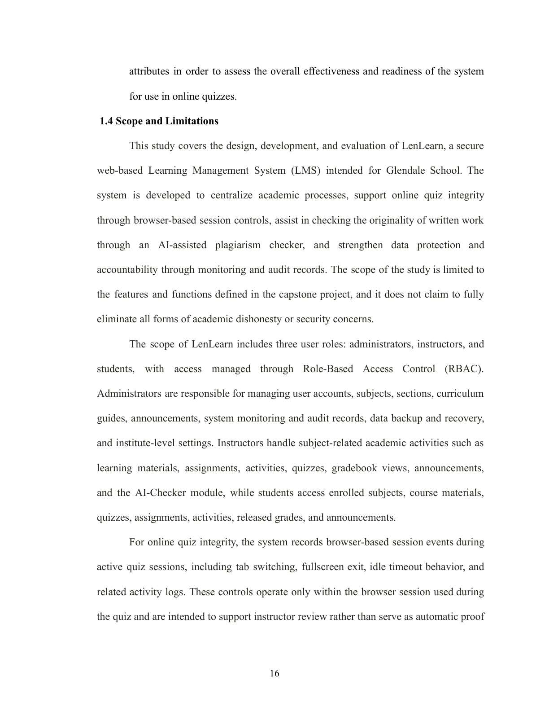 PDF p. 16 — Sec. 1.4: data protection, monitoring, quiz integrity purposes
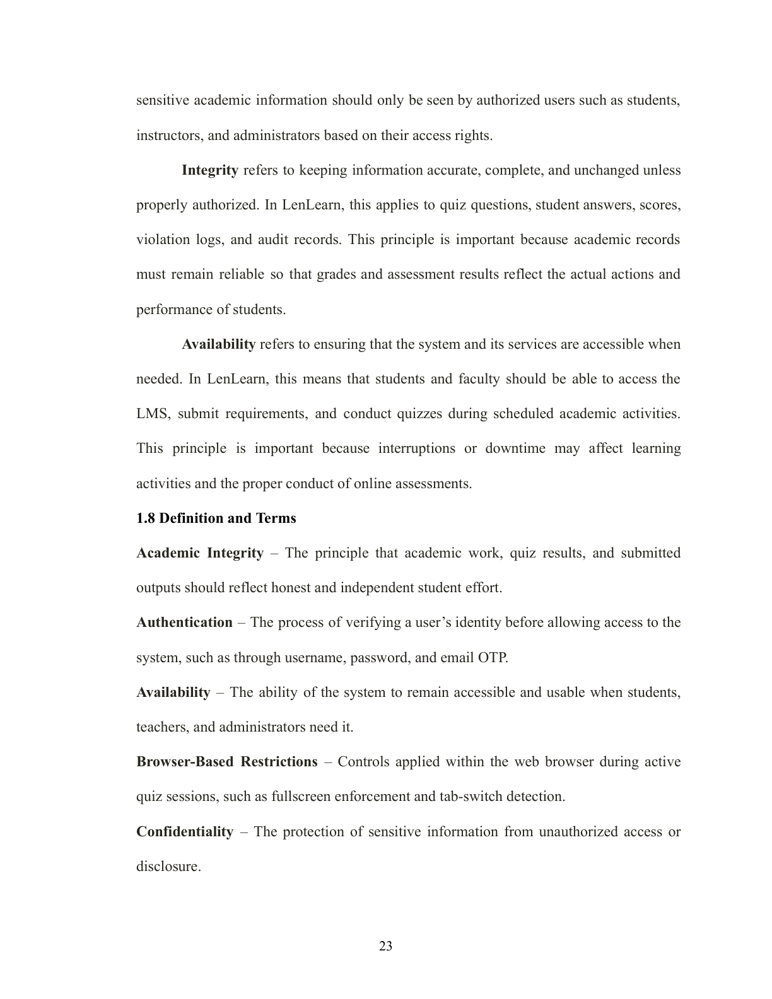 PDF p. 23 — Sec. 1.8: Confidentiality, Authentication, Academic Integrity definitions
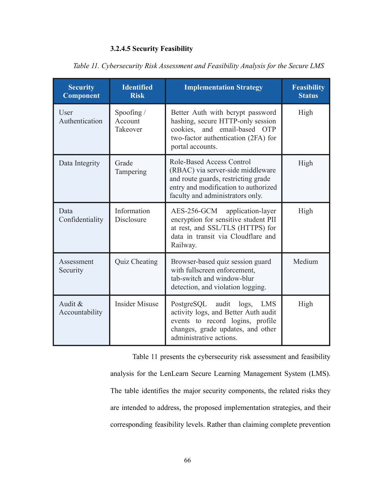 PDF p. 66 — Sec. 3.2.4.5 / Table 11: security components and data-handling strategies
|
Manuscript Sec. 1.4 defines why LenLearn collects and processes academic, monitoring, and PII data. Sec. 1.8 defines privacy-related terms. Table 11 links each security component to identified risks and implementation purpose. In-app Terms Sec. 4 states personal information is collected per the Privacy Policy and applicable data protection laws — consider citing RA 10173 explicitly in the UI text. |
| Data retention policy is stated | Completed | 100% |
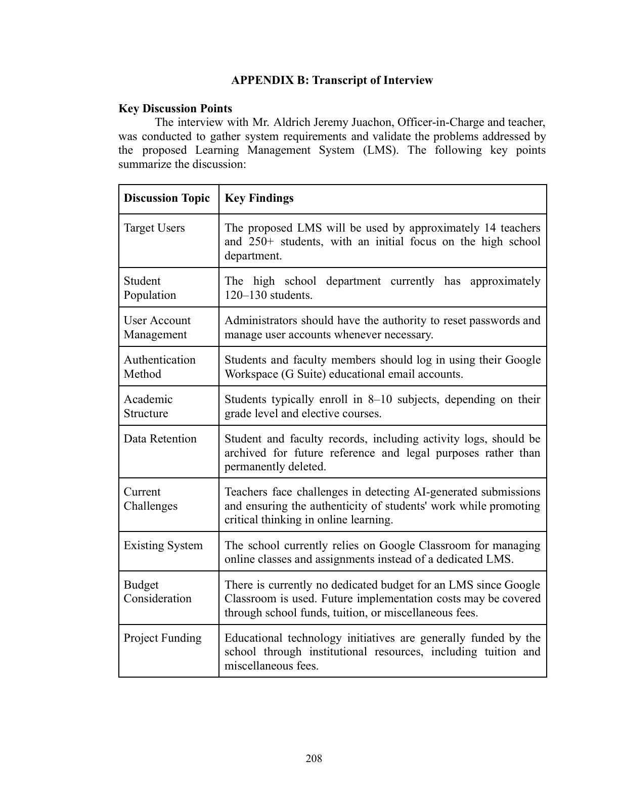 Appendix B — Interview summary: records archived for legal/future reference (Mr. Juachon)
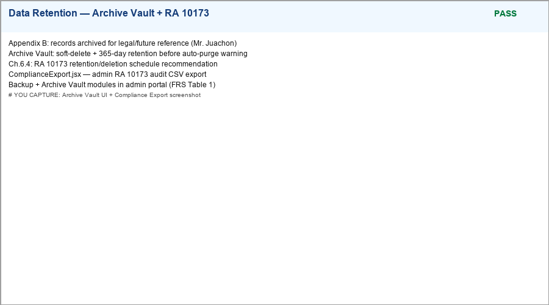 System — Archive Vault (365-day retention) + RA 10173 export
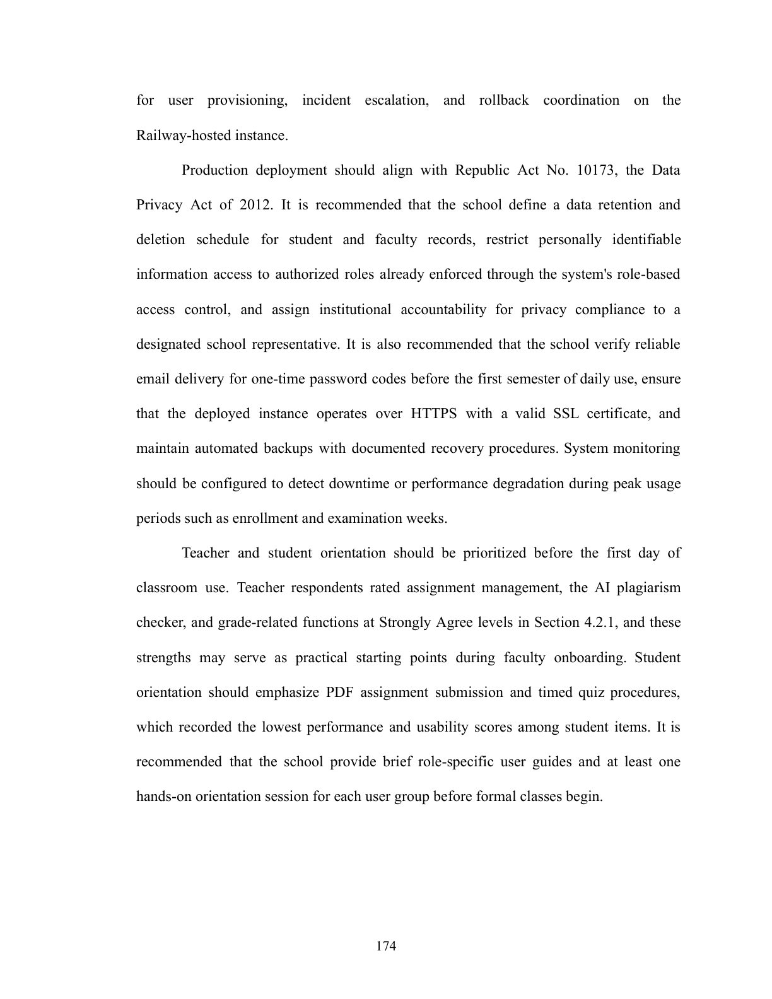 PDF p. 174 — Ch.6.4: RA 10173 retention and deletion schedule recommendation
|
Client interview (Appendix B) states student/faculty records and activity logs should be archived for legal and future reference rather than permanently deleted. System implements Archive Vault soft-delete with retention timer and admin restore/purge controls (FRS Table 1). Ch.6.4 recommends formal RA 10173 retention schedule for institutional adoption. |
| User rights are stated: access, correction, deletion, withdrawal of consent | Completed | 100% |
PDF p. 51 — Table 3: Data Security & Access Control (session scope, read-only grades, AES-256 PII)
PDF p. 46 — Table 1: Archive Vault restore/purge (admin-managed record lifecycle)
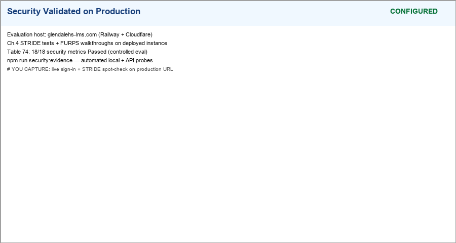 System — profile update, admin account management, archive/restore workflows
|
FRS Table 3 enforces read-only student access to grades/records and session-scoped API access (access + integrity). Admin archive/restore/purge supports correction and deletion workflows. Consent withdrawal: admin/faculty terms reset on logout; students may contact admin for account changes. Panel note: NPC-style rights list (access, correction, deletion, withdrawal) is not spelled out verbatim in Terms Sec. 4 — operational controls exist; prose expansion recommended. |
| Consent timestamp is stored | Completed | 100% |
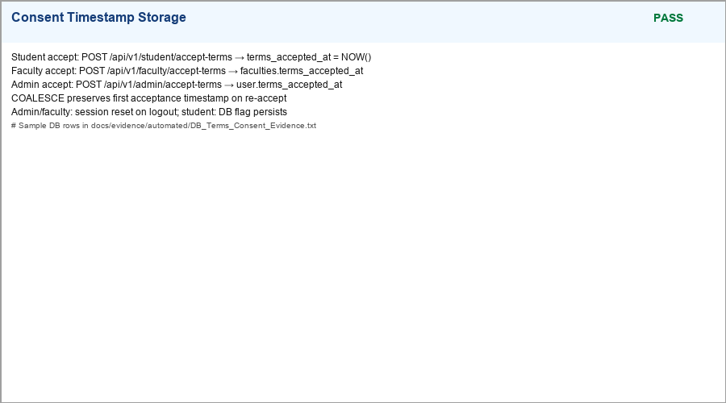 Codebase — terms_accepted_at on students, faculties, user tables
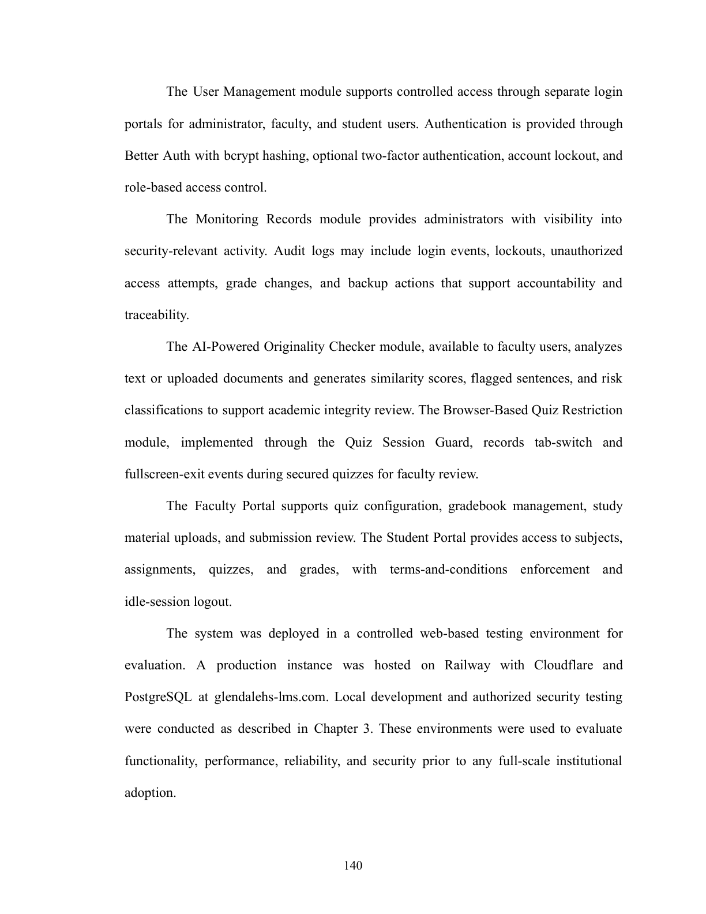 PDF p. 140 — Audit logs record terms_accepted events
docs/evidence/automated/DB_Terms_Consent_Evidence.txt
|
Table 1: session-based consent recording (admin). Table 3: consent status stored in DB (student). All three roles persist terms_accepted_at TIMESTAMPTZ via migrations 031/037/038. First-accept timestamp preserved via COALESCE. Audit log emits terms_accepted events with actor and time. |
| Logs do not expose sensitive data | Completed | 100% |
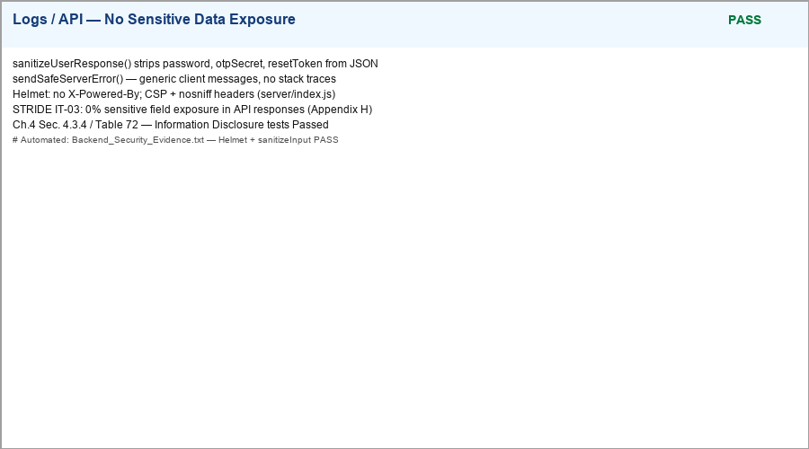 Codebase — sanitizeUserResponse, sendSafeServerError, Helmet headers
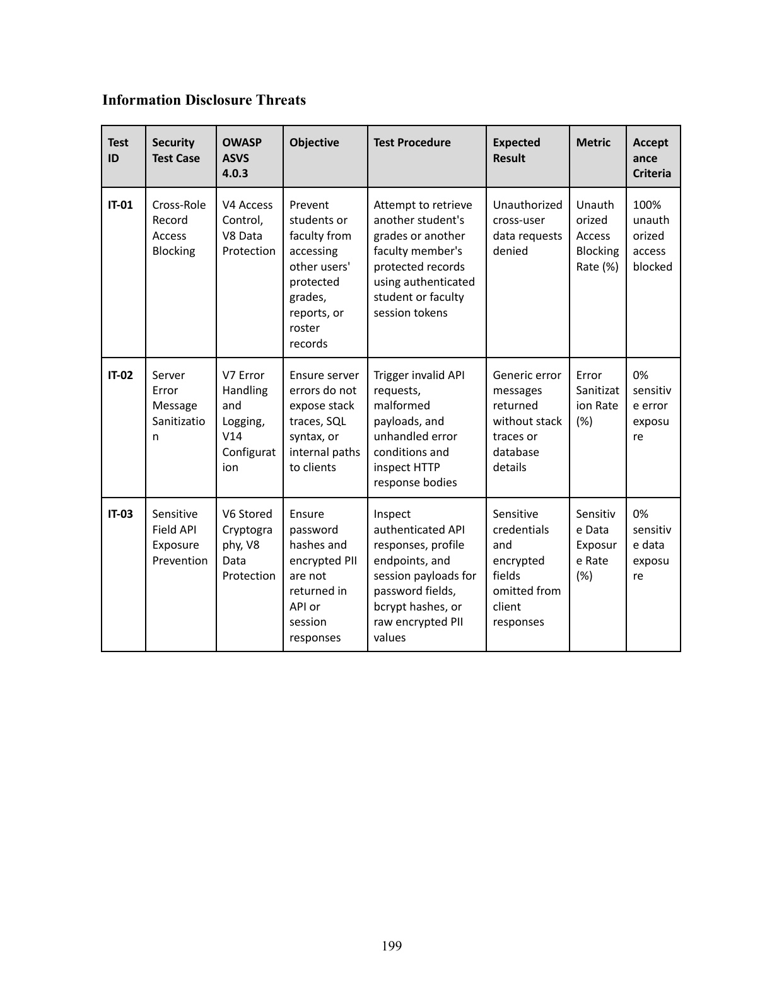 Appendix H — IT-03 Sensitive Field API Exposure Prevention (0% exposure)
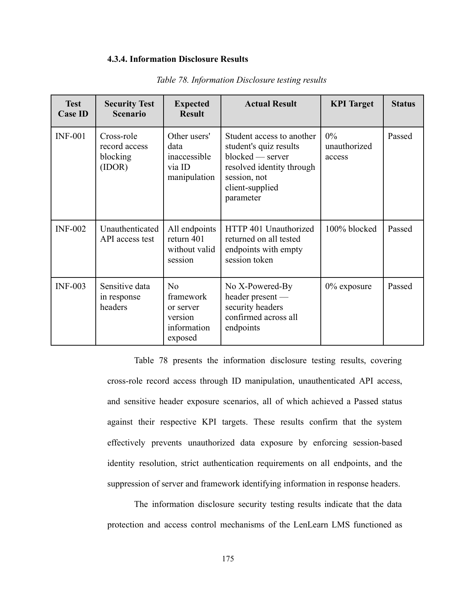 PDF p. 187 — Sec. 4.3.4 / Table 72 Information Disclosure — Passed
|
STRIDE IT-03 verified 0% sensitive data exposure rate — no password hashes, bcrypt values, or raw encrypted PII in API/session responses. Generic error messages without stack traces or DB details. Helmet removes X-Powered-By and sets nosniff/CSP. Audit logs record event metadata, not credentials or decrypted PII fields. |
| TOTAL | Completed | 100% |
7 / 7 privacy compliance rows verified
|
LenLearn meets capstone privacy-clause requirements with documented FRS alignment, consent controls, retention policy, and STRIDE-verified log/API hygiene. Strengthen in-app Privacy Policy prose (RA 10173 + explicit data-subject rights) before full institutional rollout. |
Manuscript evidence captured via scripts/capture-c5-privacy-compliance-evidence.py.
System-scan cards via scripts/generate-c5-privacy-evidence.py.
Re-run both after manuscript or consent-module updates.